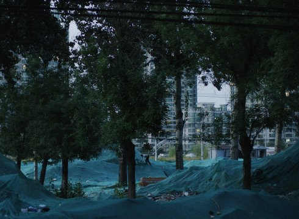

From Tomorrow On, I Will
Chun nuan hua kai

Wu Linfeng, Ivan Marković
Dienstag 15 okt | 18.30 | werkstattkino
„Night and Day“ in Peking. Li ist Nachtwächter in einem großen Büro-gebäude in Peking. Tagsüber hat er ein Bett in einem fensterlosen Zimmer, das nachts von einem Mitbewohner benutzt wird. Wenn er nach Hause kommt, steht dieser gerade auf. Ein klassisches Sujet amerikanischer Arbeiter-Melodramen aus den 1930ern. Man lernt sich auf einer Parkbank kennen, teilt notgedrungen eine Wohnung. Immer in der Hoffnung anzukommen. Einen Halt zu finden und plötzlich dazuzugehören. Li lernt niemanden kennen. Die gigantische Skyline der boomenden Megacity, die in den sorgsam kadrierten Tableaus im Hintergrund aufragt, bleibt eine unerreichbare Utopie.
Wu Linfeng geb. 1989 in Hunan, China, studierte Film. FROM TOMORROW ON, I WILL ist sein erster abendfüllender Film. |
Ivan Marković geb. 1989 in Belgrad. 2012 schloss er ein Kamerastudium ab, danach Studium von Kunst und Medien an der Universität der Künste Berlin. Ivan Marković arbeitet als Kameramann u.a. mit Angela Schanelec und Dane Komljen. Er arbeitet in Belgrad und Berlin. |
Filme (Ivan Marković) Centar 2018 | From Tomorrow On, I Will 2019 |